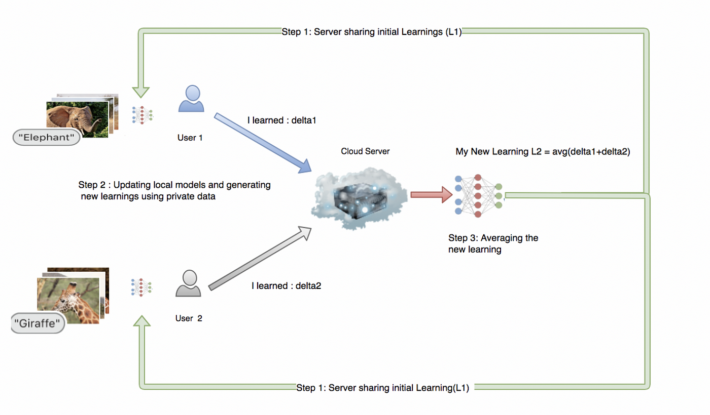

Introduction
This year we observed an amazing astronomical phenomenon, which was, a picture of a black hole for the first time. But did you know this black hole was more than 50 million light years away? And for capturing this picture, scientists require a single disk telescope that needs to be as big as the size of the earth! Since it was practically impossible to create such a telescope, they brought together a network of telescopes from across the world — the Event Horizon Telescope thus created was a large computational telescope with an aperture of the same diameter as that of the earth.
This is an excellent example of decentralized computation and it displays the power of decentralized learning that can be exploited in other fields as well.
Formed on the same principles, a new framework has emerged in AI which has the capability to compute across millions of devices and consolidate those results to provide better predictions for enhancing user experience. Welcome to the era of federated (decentralised) machine learning.
What’s federated (decentralised) machine learning?
We’ll get there, in a bit. But first, we need to understand what traditional or centralized machine learning is.
Centralized Machine Learning
With billions of mobile devices in the world, this is an era of enormous computing power. With the invention of cheaper computing power, we already have mobile phones with a hardware capacity equivalent to laptops. It won’t be long before your pocket devices will have GPUs (Graphical Processing Units) and they will be able to train deep neural networks easily. Almost everyone in the world has personal devices due to which we are witnessing a new surge in the volumes of data generated — something never observed in the past, and this is increasing at an exponential rate. With data getting generated at an ever-increasing pace, it has opened up new possibilities for providing more accurate and personalized ML models that can enhance customer experience and help them make decisions. Centralized machine learning is all about creating an algorithm using ‘training data’ — sample data, to identify patterns and trends in it. The machine then uses the algorithms to ‘learn’ such patterns and identify them in bigger chunks of data similar to sample data (more elaborate explanation here)
Let’s go into specifics now. There are five steps involved in this process:-
Back to the original question — what is federated learning and how will it help?
Federated learning is a new branch in AI that has opened the door for a new era of machine learning. It can exploit both — ‘decentralised data’ (data not stored in one location thereby making it vulnerable) and ‘decentralised computing power’ available in the modern world to provide a more personalized experience without compromising on ‘user privacy’. It is now possible to share information between a client and server without compromising on user privacy through homomorphic encryption (see this article by Andreas Poyiatzis). In simple terms, with homomorphic encryption, it is now possible to perform computations on encrypted data (no privacy violations) at the remote server location, the computation results which are also encrypted will then be sent back to the clients and clients can decrypt the personalized results without worrying about compromising its privacy.
How does it work ?
Typical Federated learning solutions start by training a generic machine learning model in a centrally located server, this model is not personalized but acts as a baseline to start with.
Next, the server sends this model to user devices(Step 1) also known as clients (clients can range from hundreds to millions depending on the user base of the application).
As client systems generate data, local models (on respective user devices) learn and get better with time.
Periodically all clients send their learning to the central server without ever exposing the user’s personal data to servers (Step 2). This is done with the help of homomorphic encryption.
The server then aggregates the new learnings from the clients and continues to improve the shared model(Step 3). The new shared model is again sent back to the client’s systems and the same cycle repeats again and again. With each passing cycle, the shared model located at the central server gets better and becomes more personalized.
This art of learning from the user’s personal data, without any threat of exposing it, has a lot of potential to derive new possibilities in the future.